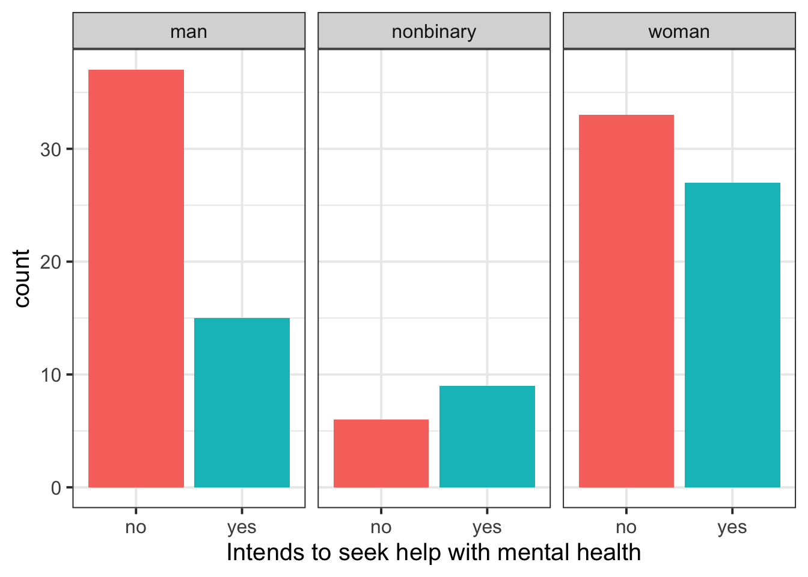

help_data |> head()# A tibble: 6 × 2
gender seekhelp
<chr> <chr>
1 woman no
2 woman no
3 woman no
4 woman no
5 woman no
6 woman no RQ: Are first-year uni students’ intentions to seek help with their mental health (yes/no) independent of their gender identity (non-binary, woman, man)?
Here’s what the first six rows of the data looks like:
help_data |> head()# A tibble: 6 × 2
gender seekhelp
<chr> <chr>
1 woman no
2 woman no
3 woman no
4 woman no
5 woman no
6 woman no And here’s the contingency table of counts for each combination of gender and seekhelp:
table(help_data$gender, help_data$seekhelp)
no yes
man 37 15
nonbinary 6 9
woman 33 27Here’s how we might plot this data (if you’re not sure what part of the code does, delete it or comment it out and try running what’s leftover to see what changes):
help_data |>
ggplot(aes(x = seekhelp, fill = seekhelp)) +
geom_bar() +
facet_wrap(~ gender) +
theme(legend.position = 'none') +
labs(
x = 'Intends to seek help with mental health'
)
The null hypothesis H0 is that students’ intention to seek help is independent of gender.
The alternative hypothesis H1 is that students’ intention to seek help is not independent of gender.
(Don’t worry about mathematical notation for these hypotheses. Technically there is a mathematical operator that means “is independent from”, but we won’t worry about it here.)
Use the function chisq.test() and give it three pieces of information:
correct = FALSE, which runs the standard chi-squared test, not the “corrected” version.For the chi-squared test, it’s useful to assign the test result to a new variable, so that we can look at the test’s residuals and expected values later (see below).
help_chisq <- chisq.test(
help_data$seekhelp,
help_data$gender,
correct = FALSE
)
help_chisq
Pearson's Chi-squared test
data: help_data$seekhelp and help_data$gender
X-squared = 5.81, df = 2, p-value = 0.055Let’s also check the residuals, so that we can see where counts are lower than we would expect (negative residuals) or higher than we would expect (positive residuals).
help_chisq$residuals help_data$gender
help_data$seekhelp man nonbinary woman
no 1.05441 -0.99343 -0.48489
yes -1.28716 1.21272 0.59192| Type of requirement / assumption | What to check for an independent-samples t-test |
|---|---|
| Data requirements | Both variables are categorical. |
| Data requirements | Expected counts in each cell of the contingency table \(\geq\) 5. |
| Assumption of independence | The obtained sample data are a random sample from the population of interest. |
First: Both variables are categorical.
glimpse(help_data)Rows: 127
Columns: 2
$ gender <chr> "woman", "woman", "woman", "woman", "woman", "woman", "woman"…
$ seekhelp <chr> "no", "no", "no", "no", "no", "no", "no", "no", "no", "no", "…Yes, both categorical.
Second: Expected counts in each cell of the contingency table \(\geq\) 5.
help_chisq$expected help_data$gender
help_data$seekhelp man nonbinary woman
no 31.118 8.9764 35.906
yes 20.882 6.0236 24.094Yes, all values greater than 5.
The obtained sample data are a random sample from the population of interest.
This is an issue of study design more than something we can check directly.
But we can still check: Does each observation in help_data contribute exactly one count to the contingency table?
head(help_data)# A tibble: 6 × 2
gender seekhelp
<chr> <chr>
1 woman no
2 woman no
3 woman no
4 woman no
5 woman no
6 woman no Yes, it looks like each row contains only one combination of gender and seekhelp.
For this data, our contingency table is 2x3 (or 3x2, depending on how you count it, but same difference—it’s different from 2x2).
For non-2x2 contingency tables, the appropriate effect size measure is Cramér’s v.
(For 2x2 contingency tables, the appropriate measure would be \(\phi\) “phi”, and the code below would just replace cramers_v() with phi().)
library(effectsize)
cramers_v(
help_data$gender,
help_data$seekhelp
)Cramer's V (adj.) | 95% CI
--------------------------------
0.17 | [0.00, 1.00]
- One-sided CIs: upper bound fixed at [1.00].Interpreting Cramér’s v depends on the test’s degrees of freedom, which you can calculate yourself or see in the output from chisq.test().
Degrees of freedom for contingency tables are calculated as
\[ (\text{rows in contingency table} - 1) \times (\text{columns in contingency table} - 1) \]
So, this data has two degrees of freedom. That information tells us which column of the following table we need to look at.
| Effect size | df = 1 | df = 2 | df = 3 | df = 4 | df = 5 |
|---|---|---|---|---|---|
| Small | .10 | .07 | .06 | .05 | .04 |
| Medium | .30 | .21 | .17 | .15 | .13 |
| Large | .50 | .35 | .29 | .25 | .22 |
First, we need to check how many observations we have in the dataset:
nrow(help_data)[1] 127Now we’re ready.
In this analysis, we wanted to find out whether the help-seeking intentions of first-year university students (either ‘yes’ or ‘no’) is independent from their gender identity (for simplicity, categorised only into ‘nonbinary’, ‘woman’, and ‘man’). To test this question, we ran a chi-squared test of independence with \(\alpha\) = .05.
This test requires that both variables be categorical (which is true of this data) and that all expected counts be greater than or equal to five (which is also true). Further, it also assumes independence between data points: data must be a random sample from the population of interest. Based on the study design, we are satisfied that this assumption is met.
Our chi-squared test indicates no significant association between gender and intention to seek help (\(\chi^2\)(2, N = 127) = 5.81, p = 0.055). We therefore cannot reject the null hypothesis that help-seeking intention is independent of gender identity in first-year university students.